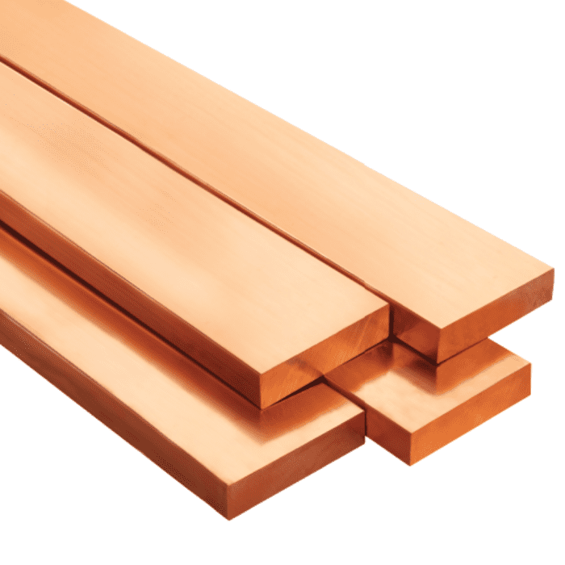
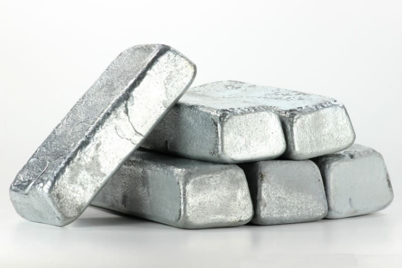

Cobre
El cobre es un metal de color rojizo, excelente conductor de electricidad y calor. Se utiliza ampliamente en la industria eléctrica y electrónica, así como en la construcción de tuberías y cables.
Zinc
El zinc es un metal de color blanco azulado, resistente a la corrosión. Se utiliza principalmente en la galvanización del acero para protegerlo contra la oxidación. También se encuentra en aleaciones como el latón.
